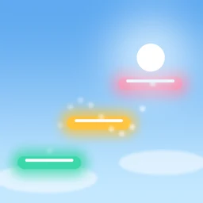
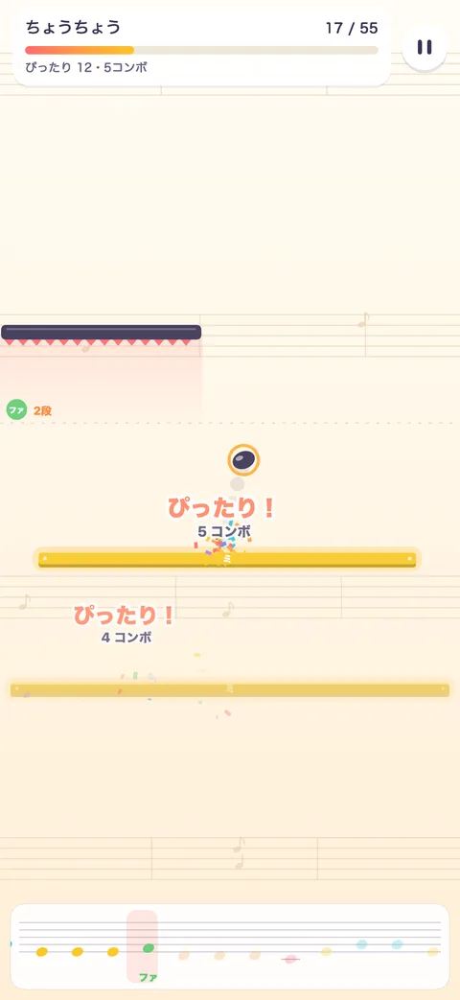
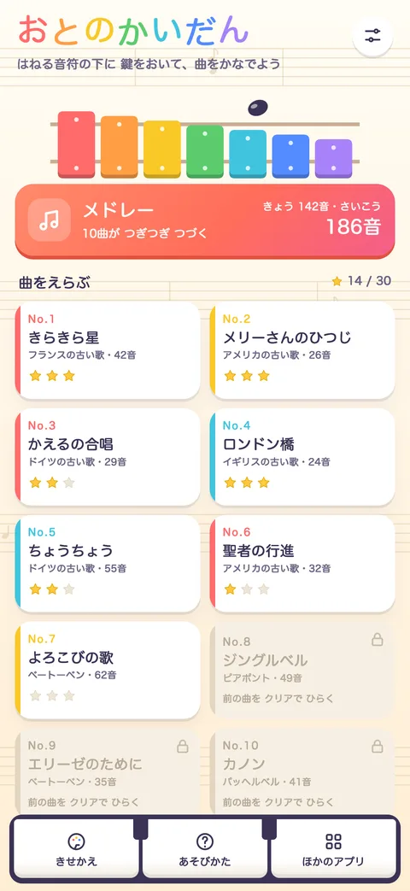
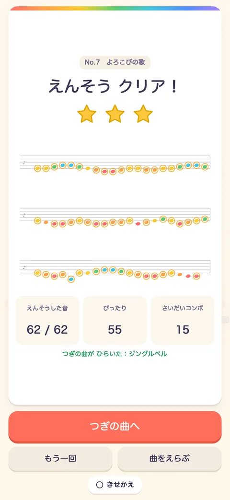
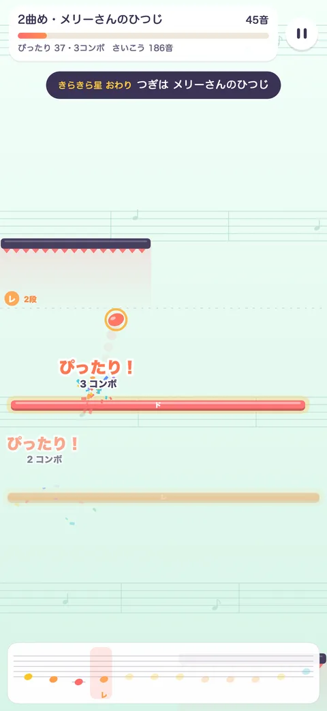
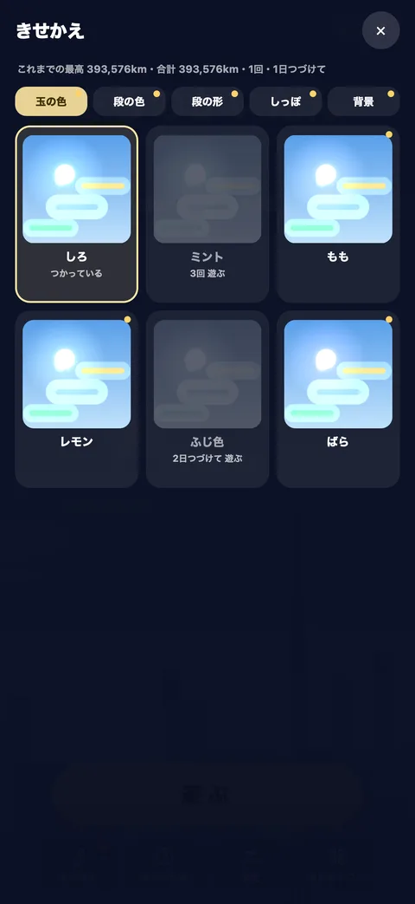

タップで演奏する、音楽ゲーム（iPhone）
おとのかいだん
鍵をおくたびに、
曲の次の音が鳴る。
音符の玉が、左右に動きながらはねています。タップで玉の下に鍵をおくと、曲の次の音が鳴ります。点線のすぐ上でおすと「ぴったり！」で、すんだきれいな音に。
App Store で近日公開無料・広告あり／iPhone（iOS 18 以降）


アプリの画面
おとのかいだんとは？
おとのかいだんは、はねる音符の下に、タップで鍵をおくと、曲の次の音が鳴る音楽ゲーム。きらきら星からカノンまで10曲を、自分の指で演奏しよう。曲ごとのステージ・メドレー・音色のきせかえ・ランキングつき。無料（広告あり）のiPhoneアプリ。
- 料金無料・広告あり
- 対応iPhone（iOS 18 以降）
- ジャンルのんびり





メドレーの音の数を「今日」「今週」「ぜんぶ」でくらべる
- 何音まで演奏できたか10曲がつぎつぎつづくメドレーで、何音まで演奏できたかをくらべます。自分の前後の順位も見られます。
- 名前を決めるだけサインインはいりません。ニックネームを決めるだけで参加でき、記録はいつでも消せます。
- 通報もできるふさわしくない名前や記録は「…」から通報できます。
遊ぶのに通信はいりません。ランキングは、名前を決めて通信できるときに使えます。
こんな人におすすめ
- 音楽やピアノが好きな人
- タイミングをはかるゲームが好きな人
- 知っている曲を、自分の指で鳴らしてみたい人
遊び方は3ステップ
- タップ画面をタップすると、玉の下に鍵ができて、曲の次の音が鳴ります。鍵の色はドレミの色。
- ぴったり点線のすぐ上でおすと「ぴったり！」。すんだ音で鳴って、次の鍵は2段上に。
- よける黒い鍵にあたるとおしまい。玉があいている側に来てから鍵をおいて、通りぬけます。
特徴
- 10曲のステージきらきら星からカノンまで
- 3つの星ぴったりが多いほどふえる
- 5つの音色ピアノ・オルゴール・マリンバ・鉄琴・ピコピコ
- 3つのランキング今日・今週・ぜんぶ
おとのかいだん を無料で遊んでみる
App Store で近日公開無料・広告あり／iPhone（iOS 18 以降）
ことばの説明
- ランキング
- ニックネームと記録だけでくらべるしくみ。サインインなし、いつでも消せます。 くわしく
くわしい遊び方
音符の玉が、左右に動きながらはねています。画面をタップすると、玉の下に鍵ができて、曲の次の音が鳴ります。点線のすぐ上でおすと「ぴったり！」で、すんだきれいな音で鳴って、次の鍵は2段上にできます。鍵の色はドレミの色で、左はしの丸は次に鳴る音です。黒い鍵にあたるとおしまい。玉があいている側に来てから鍵をおいて、通りぬけます。
- 曲のステージ：きらきら星・メリーさんのひつじ・かえるの合唱・ロンドン橋・ちょうちょう・聖者の行進・よろこびの歌・ジングルベル・エリーゼのために・カノンの10曲。最後の音まで鳴らせたらクリアで、ぴったりが多いほど星がふえて、次の曲がひらきます
- メドレー：10曲がつぎつぎにつづくモード。何音まで演奏できたかを記録します
- きせかえ：玉の色・鍵の形・音色（ピアノ・オルゴール・マリンバ・鉄琴・ピコピコ）・紙の色。曲をクリアしたり、星をあつめたり、毎日遊んだりすると手に入ります
- ランキング：メドレーで何音まで演奏できたかを「今日」「今週」「ぜんぶ」でくらべます。ニックネームを決めるだけで参加できます
よくある質問
タップで曲を演奏できるゲームは？
おとのかいだんは、はねる音符の下にタップで鍵をおくと、曲の次の音が鳴る音楽ゲームです。きらきら星やカノンなど10曲を、自分の指で演奏します。点線のすぐ上でおすと「ぴったり！」ですんだ音になります。無料です（広告あり）。
無料ですか？
はい、無料でダウンロードして遊べます（広告あり）。App Store で近日公開です。
どの端末で使えますか？
iPhone（iOS 18 以降）で使えます。Android 版はありません。
すぐに黒い鍵にあたってしまう
黒い鍵は、玉があいている側に来るのを待ってから鍵をおくと通りぬけられます。あわてずに、点線のすぐ上でタップするのがこつです。
次の曲がひらかない
いまの曲を最後の音まで演奏してクリアすると、次の曲がひらきます。
ランキングに名前が出ない
ランキングに参加するには、タイトルの「ランキング」でニックネーム（1〜10文字）を決めてください。通信できるときに、メドレーの記録が送られます。名前を決めなければ、何も送りません。
いやな名前の人がいた
ランキングの行の「…」から通報できます。ちがう3人から通報された記録は表示されなくなり、名前は「ななしさん」にもどります。
ランキングから自分の記録を消したい
ランキングの画面のいちばん下の「ランキングから自分の記録を消す」を押すと、すぐに消えます。アプリを削除しただけでは、サーバーの記録は消えません。
音や振動を止めたい
タイトルの右上の「設定」で、タイトルの音楽・演奏の音・効果音・振動をそれぞれオン・オフできます。
記録やきせかえを消したい・機種変更したい
記録ときせかえは、この iPhone の中にだけ保存しています。アプリを削除すると消えます。ほかの iPhone へ引きつぐことはできません。
広告について
広告はタイトルと結果の画面の下に出ます。遊んでいるあいだは出しません。何回か遊んだあと、結果の画面でときどき全画面の広告が出ます。つまずいたとき、動画を見て1回だけ続きから遊べます（見なくても遊べます）。
お問い合わせ
不具合やご要望は、メールでお知らせください。お使いの iPhone の機種と iOS のバージョンを書いていただけると助かります。